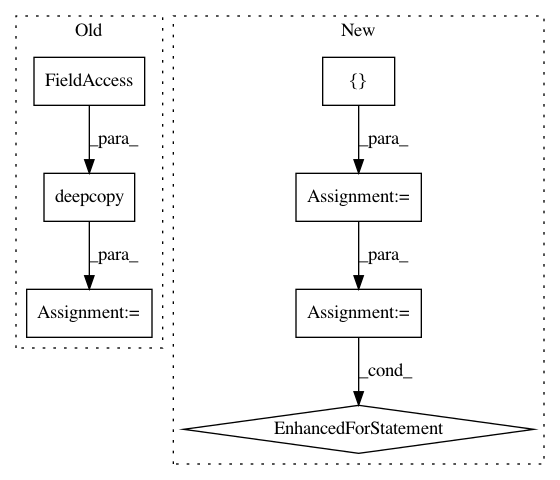

fea19ef103bfdae10a268c7c1b3f63a9e1a3701f,onmt/tests/test_preprocess.py,,,#,106
Before Change
_add_test(p, "dataset_build")
// Test audio preprocessing
for p in copy.deepcopy(test_databuild):
p.append(("data_type", "audio"))
p.append(("src_dir", "/tmp/speech/an4_dataset"))
p.append(("train_src", "/tmp/speech/src-train-head.txt"))
p.append(("train_tgt", "/tmp/speech/tgt-train-head.txt"))
p.append(("valid_src", "/tmp/speech/src-val-head.txt"))
p.append(("valid_tgt", "/tmp/speech/tgt-val-head.txt"))
p.append(("sample_rate", 16000))
p.append(("window_size", 0.04))
p.append(("window_stride", 0.02))
p.append(("window", "hamming"))
_add_test(p, "dataset_build")
After Change
_add_test(p, "dataset_build")
// Test image preprocessing
test_databuild = [[],
[("tgt_vocab_size", 1)],
[("tgt_vocab_size", 10000)],
[("tgt_seq_length", 1)],
[("tgt_seq_length", 5000)],
[("tgt_seq_length_trunc", 1)],
[("tgt_seq_length_trunc", 5000)],
[("shuffle", 0)],
[("lower", True)],
[("shard_size", 5)],
[("shard_size", 50)],
[("tgt_vocab", "/tmp/tgt_vocab.txt")],
]
test_databuild_common = [("data_type", "img"),
("src_dir", "/tmp/im2text/images"),
("train_src", "/tmp/im2text/src-train-head.txt"),
("train_tgt", "/tmp/im2text/tgt-train-head.txt"),
("valid_src", "/tmp/im2text/src-val-head.txt"),
("valid_tgt", "/tmp/im2text/tgt-val-head.txt"),
]
for p in test_databuild:
_add_test(p + test_databuild_common, "dataset_build")
// Test audio preprocessing
test_databuild = [[],
[("tgt_vocab_size", 1)],
[("tgt_vocab_size", 10000)],
[("src_seq_length", 1)],
In pattern: SUPERPATTERN
Frequency: 3
Non-data size: 7
Instances
Project Name: OpenNMT/OpenNMT-py
Commit Name: fea19ef103bfdae10a268c7c1b3f63a9e1a3701f
Time: 2018-10-05
Author: da03@users.noreply.github.com
File Name: onmt/tests/test_preprocess.py
Class Name:
Method Name:
Project Name: OpenNMT/OpenNMT-py
Commit Name: d314a48ed4a95926aece62f554cecb4544b5acd5
Time: 2019-11-12
Author: pltrdy@gmail.com
File Name: onmt/models/model_saver.py
Class Name: ModelSaverBase
Method Name: save
Project Name: has2k1/plotnine
Commit Name: baaed623e7eaf31ba7119ae5ba6a45e615f1596a
Time: 2015-10-06
Author: has2k1@gmail.com
File Name: ggplot/geoms/geom.py
Class Name: geom
Method Name: _make_pinfos